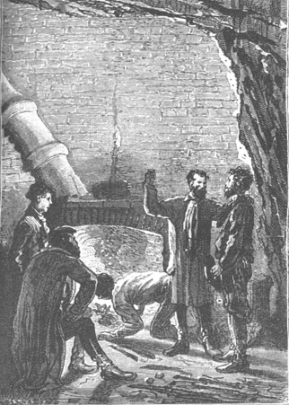

The winter season really began with the month of June, which corresponds to the month of December in the northern hemisphere. It started with showers and squalls which followed each other without intermission. The hosts of Granite House could appreciate the advantages of a dwelling beyond the reach of the harsh weather. The shelter of the Chimneys would really have been insufficient against the rigors of winter and it was to be feared that the high tides, driven on by the winds from the open sea, would make further inroads there. Cyrus Smith even took some precautions to provide for this eventuality in order to preserve, as much as possible, the forge and the furnace which were installed there.
During all of this month of June, the time was employed with various activities which excluded neither hunting nor fishing and the reserves of the pantry were abundantly maintained. Pencroff, as soon as he had the time, proposed to make traps from which he expected great things. He made some collars of ligneous fibers and not a day passed when the warren did not furnish its contingent of rodents. Neb employed nearly all of his time to salt or smoke these meats, which were excellently preserved.
The question of clothing was then very seriously discussed. The colonists had no other clothes than the ones that they wore when the balloon threw them on the island. These clothes were warm and sturdy and by taking care of them, as well as their underwear, they had kept them in perfect condition, but they would soon have to be replaced. If the winter would be rigorous, the colonists would suffer much from the cold.
On this subject the ingenuity of Cyrus Smith was in default. He had to take care first of the most pressing problems, making a dwelling and assuring the food supply. Hence the frost could come on before the question of clothing had been resolved. They would have to resign themselves to passing this first winter without complaining. When the fine season came, they would conduct a serious hunt for those wild sheep whose presence had been noted during the exploration of Mount Franklin and, once the wool was collected, the engineer would be able to make a warm and sturdy material... How? He would think about it.
“Well then, we will be free to roast our legs at Granite House,” said Pencroff. “There’s lots of fuel and no reason to spare it.”
“Besides,” replied Gideon Spilett, “Lincoln Island is not situated at a very high latitude and it is probable that the winters will not be bad here. Didn’t you tell us, Cyrus, that the 35th parallel corresponds to that of Spain in the other hemisphere?”
“Without doubt,” replied the engineer, “but certain winters are very cold in Spain. Snow and ice are not lacking there and Lincoln Island is perhaps also rigorously tried. However, it is an island and as such I hope that the temperature will be more moderate.”
“Why so, Mister Cyrus?” asked Herbert.
“Because the sea, my child, may be considered as an immense reservoir which stores up the heat of the summer. With the coming of winter it returns this heat, which assures a moderate temperature to those regions near oceans, not as high in the summer, but not as low in the winter.”
“We will look forward to it,” replied Pencroff. “I do not trouble myself as to whether it is cold or not. But this is certain, that the days are already short and the evenings long. May we give a little consideration to the question of illumination?”
“Nothing is easier,” replied Cyrus Smith.
“To consider?” asked the sailor.
“To solve.”
“And when do we begin?”
“Tomorrow, by organizing a hunt for seals.”
“To make wax candles?”
“For shame, Pencroff, tallow candles.”
Such was in fact the engineer’s plan, a realistic plan, since he had lime and sulphuric acid and the amphibians of the islet would furnish the fat necessary to make it.
It was the 4th of June, Whit Sunday, and they agreed unanimously to observe this holiday. All work was suspended and prayers were directed to Heaven. But these prayers were now those of thanks. The colonists of Lincoln Island were no longer the unfortunate castaways thrown on the islet. They no longer asked for anything, they gave thanks.
The next day, the 5th of June, amid rather uncertain weather, they left for the islet. It was still necessary to profit from the low tide to cross the channel, and while on this subject, it was agreed that they would construct, for better or for worse, a boat which would make communications easier and also permit them to ascend the Mercy when that important exploration of the southwest of the island would be undertaken during the first fine days.
The seals were numerous and the hunters, armed with their iron tipped spears, easily killed half a dozen. Neb and Pencroff skinned them and only brought to Granite House their fat and their skins, these skins to be made into sturdy footwear.
The result of this hunt was as follows, about three hundred pounds of fat which would be entirely used for making candles.
The operation was extremely simple and, if it did not yield absolutely perfect products, they were nonetheless usable. Cyrus Smith only needed the sulphuric acid. Heating this acid with the neutral fatty material from the seal’s fat would enable him to isolate the glycerin; then, from this new combination, it would be easy to separate the olein, the margarine, and the stearin using boiling water. But in order to simplify the operation he preferred to saponify the fat by means of the lime. He obtained a sort of calcareous soap, easy to decompose with the sulphuric acid, which precipitated as sulphate of lime, freeing the fatty acids.
Of these three acids, olein, margarine, and stearin, the first, being liquid, was driven out by sufficient pressure. As to the other two, they formed the very substance which would be used in molding the candles.
The operation did not last more than twenty four hours. The wicks, after several attempts, were made of vegetable fibers and, soaked in the liquified substance, they formed real stearin candles, molded by hand, lacking only whiteness and polish. They doubtless did not offer the advantages which wicks impregnated with boric acid have of vitrifying themselves as they burn so as to consume themselves entirely; but Cyrus Smith, having made a beautiful pair of snuffers, these candles would be greatly appreciated during the evenings at Granite House.
During all of this month, there was no lack of work on the interior of the new dwelling. The joiners had their work cut out for them. They perfected the tools which were very rudimentary. They also completed their stock.
Some scissors were made among other things and the colonists were finally able to cut their hair and their beards, at least to trim them imaginatively. Herbert had no beard and Neb hardly any, but their companions were so overgrown as to justify the making of the said scissors.
The making of a hand saw cost infinite pain, but finally they obtained an instrument which, when vigorously handled, would cut the ligneous fibers of wood. Thus they made tables, benches and wardrobe cabinets which furnished the main rooms, and bed frames whose bedding consisted entirely of mattresses of seawrack. The kitchen, with its terra cotta utensils resting on shelves, its brick furnace and its stone washstand, had a formal look and Neb operated there as seriously as if he were in a chemist’s laboratory.
But the joiners were soon replaced by carpenters. The new overflow created by the mine made it necessary to construct two bridges, one on Grand View Plateau and the other on the shore itself. In fact, now the plateau and the shore were cut transversely by a watercourse which they had to cross when they wanted to get to the north of the island. To avoid this, the colonists would have been obliged to make a considerable detour and ascend westward to the sources of Red Creek. It was simpler to build two bridges on the plateau and on the shore, twenty to twenty five feet in length. Squaring the trees with an axe was the only carpentry. This was the work of a few days. The bridges built, Neb and Pencroff then profited from them by going to the oyster bed, which had been discovered near the dunes. They hauled with them a sort of large cart which replaced the old very inconvenient hurdle, and they brought back several thousand oysters that quickly acclimatized themselves among the rocks at the mouth of the Mercy, becoming as good as a natural oyster bed. These mollusks were of an excellent quality and the colonists consumed them nearly every day.
As we know, although the inhabitants of Lincoln Island had only explored a small portion of it, the island had already furnished nearly all their needs. And it was likely that, buried in its more secret retreats, over all of this wooded part that extended from the Mercy to Reptile Promontory, it would lavish new treasures.
The colonists of Lincoln Island still had one deprivation. Their diet did not lack protein, nor vegetable products which they modified for their use; the ligneous roots of the dragon trees, subjected to fermentation, gave them a sour beverage, a sort of beer preferable to pure water; they even made sugar, without cane sugar or sugar beets, by collecting this liquid that was distilled as “acer saccharum,” a sort of maple of the aceraceae family, which prospers in all temperate zones and which were abundant on the island; they made a very agreeable tea by using the monarda brought back from the warren; lastly, they had an abundance of salt, the only mineral product which enters into the preparation of food... but they could not make bread.
Perhaps at a later time the colonists would be able to replace this food with some equivalent, the flour of the sago tree or the bread tree, and it was in fact possible that the southern forests had these precious trees, but up to this time they had not encountered them.
However, Providence was able, in this circumstance, to come directly to the colonists’ aid, in an infinitesimal way it is true, but Cyrus Smith, with all his intelligence and all his ingenuity could never have produced that which Herbert, by the greatest chance, found one day in the lining of his vest which he was mending.
On this day it was raining in torrents. The colonists were assembled in the main hall of Granite House when the lad suddenly cried out:
“Well, Mister Cyrus. A grain of corn.”
And he showed his companions a grain, a single grain, which got into the lining of his vest through a hole in his pocket.
The presence of this grain was explained by Herbert’s habit, while in Richmond, of feeding some pigeons that Pencroff had given him.
“A grain of corn?” replied the engineer vividly.
“Yes, Mister Cyrus, but only one, nothing but a single one.”
“Well, my boy,” cried Pencroff, smiling, “we are really getting on. What will we be able to make with this single grain of corn?”
“We will make bread from it,” replied Cyrus Smith.
“Bread, cakes, tarts!” replied the sailor. “Come now! The bread that this grain of corn will furnish will not stuff us soon.”
Herbert, attaching no importance to his discovery, was about to throw away the grain in question, but Cyrus Smith took it, examined it, saw that it was in good condition and looking at the sailor:
“Pencroff,” he asked him tranquilly, “do you know how many ears a grain of corn can produce?”

Do you know how many ears...
“One, I suppose,” replied the sailor, surprised by the question.
“Ten, Pencroff. And do you know how many grains an ear holds?”
“My faith, no.”
“Eighty on the average,” said Cyrus Smith. “Thus, if we plant this grain, at the first harvest we will gather eight hundred grains, which will produce at the second harvest six hundred forty thousand, at the third five hundred twelve million, at the fourth more than four hundred billion grains. There are the proportions.”
Cyrus Smith’s companions listened without replying. These figures stupefied them. They were exact, however.
“Yes, my friends,” continued the engineer. “Such are the geometric progressions of a fertile nature. And yet what is this multiplication of a grain of corn whose ears contain only eight hundred grains, compared to the stems of the poppy which hold thirty two thousand grains or the stems of tobacco, which produce three hundred sixty thousand? In several years, without the numerous destructive causes which arrest their growth, these plants would overrun the entire earth.”
But the engineer had not finished his little interrogation.
“And now, Pencroff,” he continued, “do you know how many bushels four hundred billion grains will yield?”
“No,” replied the sailor, “but what I do know is that I am only a fool.”
“Well, it will make more than three million at a hundred thirty thousand per bushel, Pencroff.”
“Three million!” cried Pencroff.
“Three million.”
“In four years?”
“In four years,” replied Cyrus Smith, “and even in two years if, as I hope, we will be able to obtain two harvests per year at this latitude.”
At this, following his custom, Pencroff could think of no reply other than a formidable hurrah.
“Thus, Herbert,” added the engineer, “you have made an extremely important discovery for us. Everything, my friends, everything can serve us in the condition we find ourselves. I beg you, do not forget it.”
“No, Mister Cyrus, no, we will not forget it,” replied Pencroff, “and if ever I find one of these grains of tobacco which multiplies at three hundred sixty thousand, I assure you that I will not throw it to the wind. And now, do you know what remains to be done?”
“It remains for us to plant this grain,” replied Herbert.
“Yes,” added Gideon Spilett, “and with all the respect due to it because it carries within itself our future harvests.”
“Provided that it grows!” cried the sailor.
“It will grow,” replied Cyrus Smith.
It was the twentieth of June. The moment was thus propitious for sowing this unique and precious grain of corn. They first questioned whether they should plant it in a pot; but after reflection, they decided to very boldly refer it to nature and to entrust it to the earth. This is what was done this very day and needless to say, all precautions were taken to make the operation a success.
The weather having slightly cleared up, the colonists climbed to the heights of Granite House. There, on the plateau, they chose a spot well sheltered from the wind, on which the noonday sun would shed all its warmth. The spot was cleared, carefully weeded, even searched for insects and worms; they placed a layer of good earth on it, enriched with a little lime; they surrounded it with a fence; then the grain was buried in the wet ground.
Did it not seem that the colonists were putting down the first stone of an edifice? This recalled for Pencroff the day when he had to light his single match and all the care that he carried to this operation. But this time the thing was more serious. In fact, the castaways would always have managed to procure fire in one way or another, but no human power could again make this grain of corn if, unfortunately, it should be lost.